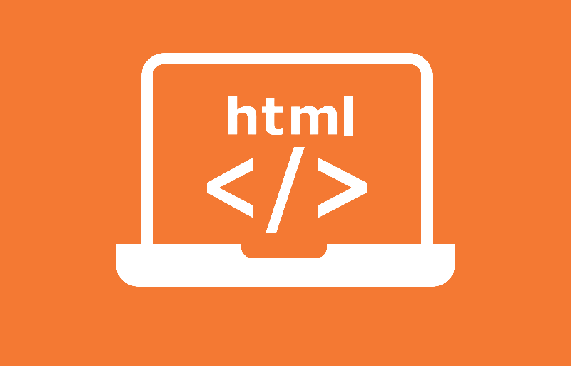
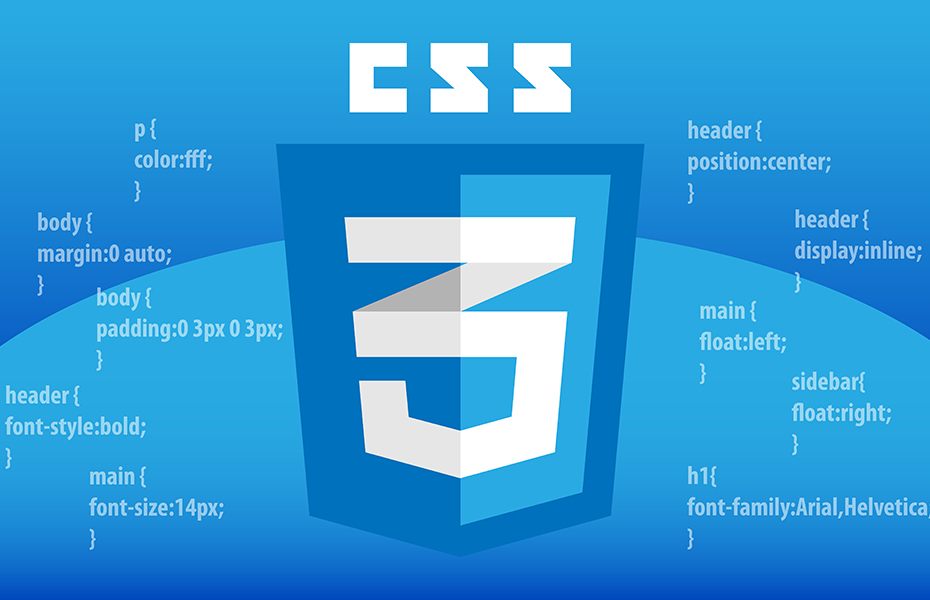

|

HyperText Markup Language is the computer language that facilitates website creation. The language, which has code words and syntax just like any other language, is relatively easy to comprehend and, as time goes on, increasingly powerful in what it allows someone to create. |

Cascading Style Sheets, fondly referred to as CSS, is a simple design language intended to transform the presentation of a Web Pages.CSS handles the look and feel part of a web page. Strictly speaking CSS is not a programming language but it does require abstract thought. |
JavaScript is a scripting or programming language that allows you to implement complex features on web pages, every time a web page does more than just sit there and display static information to look at, displaying timely content updates, maps, animated 2D/3D graphics, etc. |
|---|